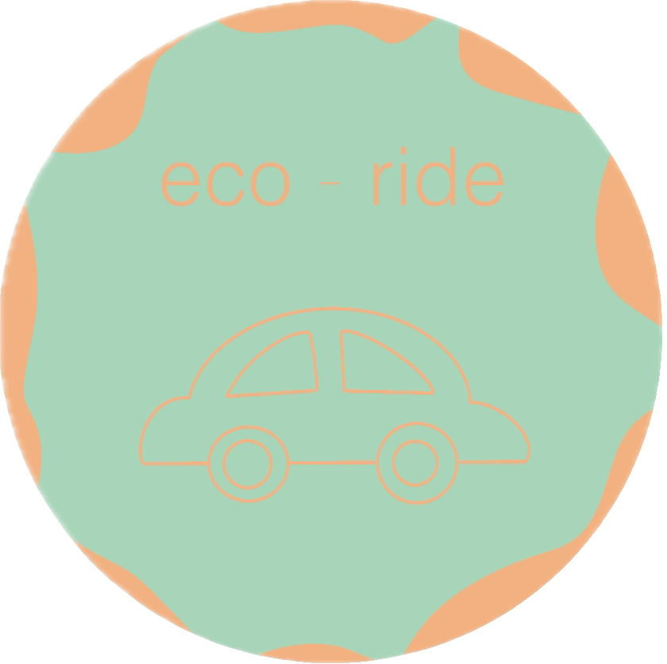

<?php
session_start(); // S'assure que la session est active

// Si l'utilisateur est connecté → lien vers son profil
if (isset($_SESSION['user_id'])) {
    $profilLink = '../UTILISATEUR/USR-infos-perso.php';
} else {
    // Si non connecté → login avec param redirect vers infos perso
    $currentPage = '../UTILISATEUR/USR-infos-perso.php';
    $profilLink = '../UTILISATEUR/USR-connexion-inscription.php?redirect=' . urlencode($currentPage);
}
?>
<header>
    <div class="header-employe">
        <div class="header-bottom">
            <div class="logo">
                <a href="../UTILISATEUR/USR-index.php" class="logo-link">
                    
                    <span class="logo-text">Eco Ride</span>
                </a>
            </div>
            <div class="user-profile">
                <nav class="nav-container">
                    <a class="nav-links" href="../UTILISATEUR/USR-index.php"> Accueil </a>
                    <a class="nav-links" href="../UTILISATEUR/USR-proposer-trajet.php"> Proposer un trajet </a>
                    <a class="nav-links" href="../UTILISATEUR/USR-recherche_trajet.php"> Rechercher un covoiturage </a>
                </nav>
                <div class="profil-container">
                    <div class="user-info">
                        <a href="<?= $profilLink ?>">
                            "
                                alt="Photo de profil"
                                class="photo-profil" id="profil-click">
                        </a>
                        <div class="menu-profil">
                            <a href="../UTILISATEUR/USR-infos-perso.php"> Mon compte </a>
                            <a href="#"> Déconnexion </a>
                        </div>
                    </div>
                </div>
            </div>
        </div>
    </div>
</header>
